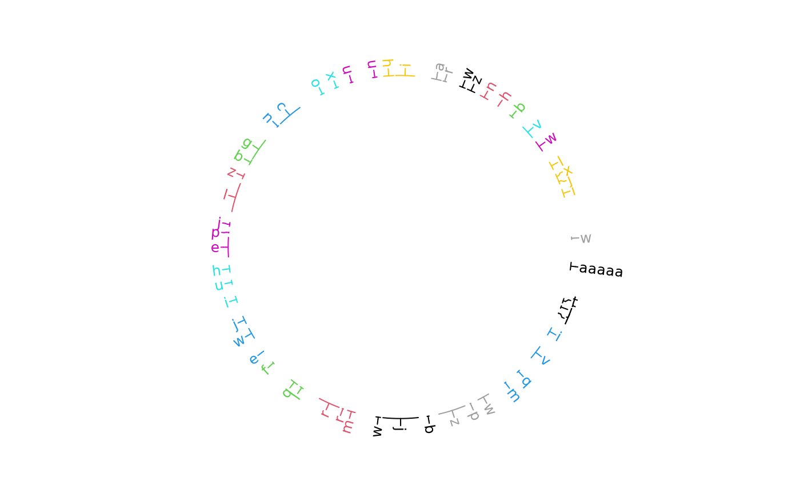

Object ccGenomicTrack will call the function circos.genomicLabels while drawing.
Arguments
- ...
Arguments passed on to
circlize::circos.genomicLabelsbedA data frame in bed format.
labelsA vector of labels corresponding to rows in
bed.labels.columnIf the label column is already in
bed, the index for this column inbed.facingfFacing of the labels. The value can only be
"clockwise"or"reverse.clockwise".niceFacingWhether automatically adjust the facing of the labels.
colColor for the labels.
cexSize of the labels.
fontFont of the labels.
paddingPadding of the labels, the value is the ratio to the height of the label.
connection_heightHeight of the connection track.
line_colColor for the connection lines.
line_lwdLine width for the connection lines.
line_ltyLine type for the connectioin lines.
labels_heightHeight of the labels track.
sideSide of the labels track, is it in the inside of the track where the regions are marked?
labels.sideSame as
side. It will replacesidein the future versions.track.marginBottom and top margins.
Value
Object ccGenomicTrack
Examples
library(circlizePlus)
bed = generateRandomBed(nr = 50, fun = function(k) sample(letters, k, replace = TRUE))
bed[1, 4] = "aaaaa"
cc = ccPlot(initMode = "initializeWithIdeogram", plotType = NULL)
t1 = ccGenomicLabels(bed, labels.column = 4, side = "outside",
col = as.numeric(factor(bed[[1]])), line_col = as.numeric(factor(bed[[1]])))
cc + t1

circos.clear()